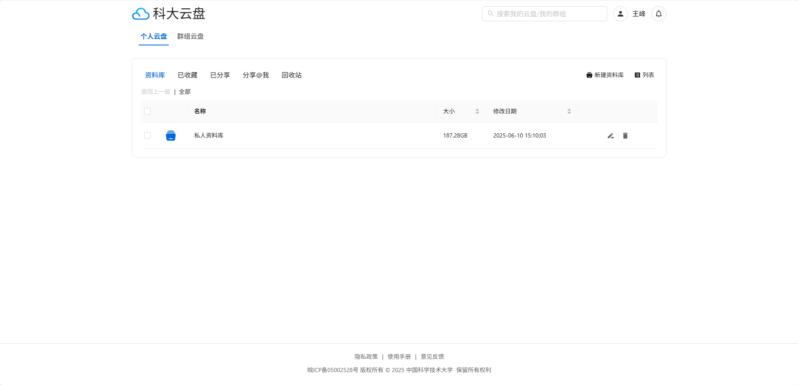
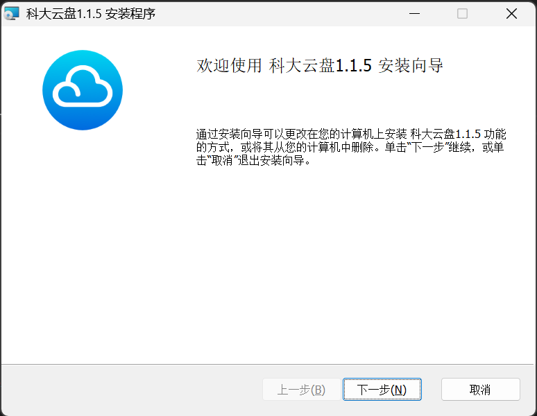
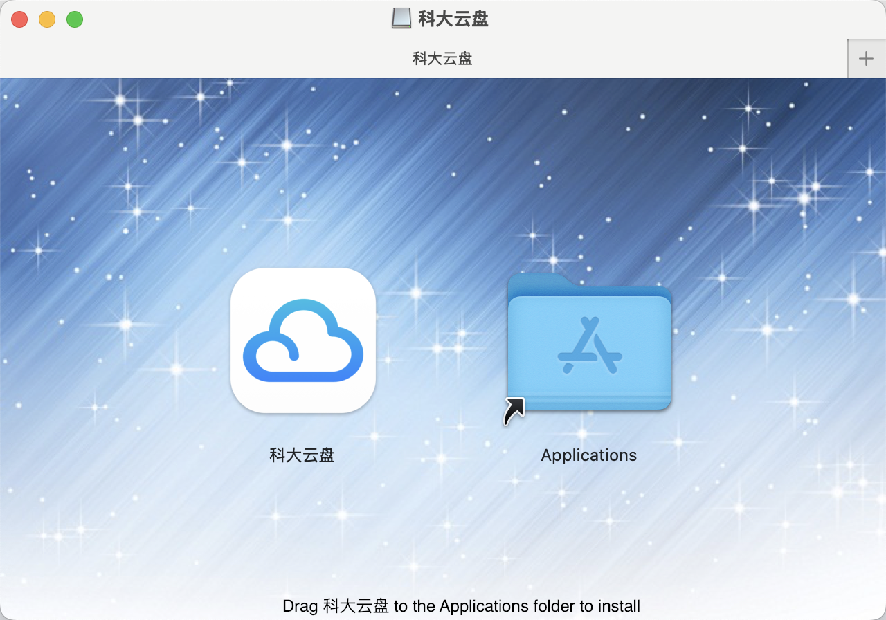

安装指南¶
科大云盘支持多种访问方式，适配不同使用场景，您可以根据自己的设备选择合适的客户端或访问方式进行配置。
🌍 网页版本¶
- 在浏览器中输入 https://pan.ustc.edu.cn ，点击右上角登录即可使用。
- 网页版无需安装，也无需安装浏览器插件。

🖥️ 桌面客户端¶
科大云盘客户端支持： - Windows 10 及以上 - macOS 11 及以上 - Linux发行版包括Ubuntu、Debian、Fedora
我们没有支持 Windows 8.1 和 Windows 7 的计划，因为微软已经终止对这两个版本操作系统的支持。
🪟 Windows¶
- 在 科大云盘首页 下载最新版本的安装文件
- 点击根据提示安装：

Mac¶
- 在 科大云盘首页 下载最新版本的安装文件
- 点击根据提示安装：

Linux¶
- Linux版本尚未发布
📱 移动端¶
iOS和Android客户端预计在6月完成开发测试，待完成备案审批后正式发布，计划支持： - iOS/iPadOS 11.0 及以上 - Android 8.0 及以上
🔗 WebDAV 挂载¶
WebDAV 挂载功能预计7月份开放测试。
⚠️ 注意事项¶
使用建议
- 推荐优先使用桌面端，可获得更好的同步体验。
如遇安装问题，请先查看 常见问题，或联系技术支持获取帮助。